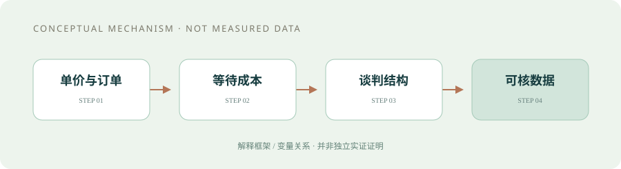

制度与权力 · 研究提纲 · 2026-11-21 整理
平台骑手：为何争取更多工作量而不是更高单价？
拆解单价、订单量、等待成本、替代供给与谈判结构；相关网传故事未独立证实。
证据状态：研究提纲。 这是一份研究问题与候选解释清单；源材料尚不足以支持已完成研究的结论。 机制示意仅辅助理解，不是数据图或因果识别。

概念图：单价与订单 → 等待成本 → 谈判结构 → 可核数据；非实证统计数据来源状态：2026-09-15 可见提问。所附跨地区调配骑手的具体网传故事未经本仓库独立证实。
将问题拆为每单价格、可接订单数、在线/等待时间、单位时间净收入、处罚与收入波动、议价和集体行动成本。两个竞争解释是：A，短期现金需求和收入不确定性影响劳动者偏好；B，派单、定价及替代供给的组织方式影响谈判结构。还要观察当地替代就业、劳动关系和集体协商渠道，不推断全部骑手都有某一种动机。
检验需同一地区同一时期的单价、订单、时长、净收入分布，规则变更前后对照和平台与劳动者可交叉核实的记录。若增加工时并未增加净收入，或存在已证实的成功单价协商，应更新解释。制度入口 · 证据方法。